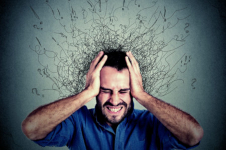

Para começar vamos voltar um pouco no passado.
Como surgiu a Depressão?
Mas antes de que ir direto ao assunto preciso passar uma informação, a depressão é uma doença que atinge não só a própria pessoa mas também os que estão a sua volta
A Origem da Depressão é uma doença mental.
Com alterações no funcionamento da mente que por sua vez prejudica todo o desempenho da pessoa e também sua vida familiar.
Todos a sua volta tais como relacionamentos, no trabalho na vida social e também nos estudos.
É provável que você deve conhecer alguém que tem Depressão, e pode estar em tratamento ou não.
Mas o importante é saber que é uma doença que não tem cura e sim tratamento e que pode ser mantida sobre controle como qualquer doença mental.
A Organização Mundial da Saúde (OMS), em seu última relatório (2013), diz que é mais comum em mulheres do que nos homens.
Principalmente afeta muita quando a mulher está na TPM
O termo depressão é relativamente novo na história, tendo sido usado pela primeira vez em 1680, para designar um estado de desânimo ou perda de interesse. Em 1750, Samuel Johnson incorporou o termo ao dicionário. O desenvolvimento do conceito de depressão emergiu com o declínio das crenças mágicas e supersticiosas que fundamentavam o entendimento dos transtornos mentais até então. Desse modo, a história do conceito de depressão tal como o concebemos na atualidade tem seu início no século XVII. Entretanto, sua origem pode ser inferida a partir das menções de alterações de humor ao longo da história, sobretudo nas referências ao estado conhecido como melancolia.
A Depressão tem Fatores
Essa doença é mais antiga do que pensamos, existem alguns fatores que podem ser considerados pela sua origem.
Fatores Externos

Por um lado a Depressão pode ser originalmente ser um fator externo, como estresse.
Momento de alguma perda familiar ou de emprego, ou de um relacionamento, momentos de perdas em geral podem provocar um gatilho.
Esse tipo de Depressão se domina de uma resposta a um evento traumático de perda, mas de onde vem a depressão
Eventualmente que por isso leva a uma reação de tensão e desânimo a pessoa fica incomodada com o evento.
Nosso corpo e nossa mente podem ser considerados maquinas perfeitas que trabalham para a nossa sobrevivência, porém, como toda máquina.
Quando ela trabalha demais e esquenta muito é preciso dar uma pausa para esfriar e de vez em quando é preciso uma boa revisão.
Caso contrário ela começará a apresentar problemas de funcionamento.
Hoje em dia somos bombardeados com informações, ao final de um dia.
O cérebro está sobrecarregado, como consequência, os quadros de estresse, fadiga, ansiedade e pânico podem surgir.
Fatores Internos
No relatório da Organização Mundial da Saúde (OMS), diz que a Depressão também pode ser devido as variações não respostas de circuitos neural.
Por sua vez reflete em alterações quase imperceptível na sua estrutura.
Isso pode interferir nos níveis de proteínas críticas que vai ser prejudicada e o funcionamento psíquico.
Em nosso cérebro temos nossos neuro transmissores que transmitem os estímulos neurais de um neurônio
Sempre dependendo de sua região cerebral podem atuar em suas emoções.
Pode se dizer que poderia ser um fator de pré disposição genética, por isso é necessário saber onde vem a depressão.
Abaixo está um pequeno video caso queira saber um pouco mais
Os Sintomas podem incluir
- Sensação de vazio ou tristeza
- Falta de vontade para realizar atividades que davam prazer
- Falta de energia e cansaço constante
- Irritabilidade
- Dores e alterações no corpo
- Problemas de sono
- Perda de apetite
- Falta de concentração
- Pensamento de morte e suicídio
- Abuso de álcool e drogas
- Lentidão
A Ansieade
A ansiedade e o medo
Há muito em comum entre a ansiedade e o medo. Os dois são estados aversivos causados por uma ameaça e que têm como objetivo proteger o organismo. Mas há também uma diferença bastante clara entre os dois.
O medo é uma emoção engatilhada por algo muito específico e imediato – por exemplo, a visão de um urso faminto. Lá está a ameaça, e é então iniciada uma reação de luta e fuga.
Já a ansiedade não é exatamente uma emoção primária. Enquanto o medo é uma disposição corporal momentânea, a ansiedade é um estado mental e corporal mais espalhado no tempo. Ela é causada por uma ameaça dilúida: não o urso, mas a possibilidade de que um lugar tenha um urso.
Se a depressão é uma reação a uma perda passada, a ansiedade é a reação a uma perda futura.
Época histórica
Entre grupos de caçadores e coletores, havia a ameaça constante de ataque de predadores e inimigos, e o risco de perder território, de faltarem animais para caçar e de acabarem os vegetais comestíveis.
A ansiedade levou nossos antepassados a buscar abrigos contra predadores, a se unir e se prevenir contra inimigos externos, a guardar provisões e a antecipar a procura por fontes alternativas de alimento.
O que é a ansiedade
A ansiedade é uma resposta normal do ser humano a uma série de situações ou eventos. No entanto, quando essa preocupação torna-se excessiva e afeta a qualidade de vida, o bem-estar e os relacionamentos pessoais ou profissionais, ela se torna um transtorno e exige tratamento.
O transtorno de ansiedade é caracterizado por uma preocupação constante e incontrolável, que acontece na maior parte dos dias por um período de no mínimo 6 meses.
A ansieade, porém, é composta por vários tipos, vamos conhecer algumas?
Tipos de Ansieades
Transtorno de ansieade generalizada
Trata-se de um quadro de ansiedade permanente e de alta intensidade, que costuma interferir na realização das atividades cotidianas.
Transtorno obsessivo compulsivo (TOC)
Como o próprio nome diz, o problema é caracterizado por pensamentos obsessivos e medos irracionais que levam a atitudes compulsivas.
Fobia social
Também conhecido como transtorno de ansiedade social, o quadro é caracterizado por altos níveis de preocupação e medo com situações sociais corriqueiras. O problema pode surgir na infância, atravessar a adolescência e, se não tratado, prosseguir por toda a vida adulta.
Abaixo está um pequeno video caso queira saber um pouco mais
Os Sintomas de ansieade podem incluir
- Medo e preocupação excessiva
- Irritabilidade
- Formigamento
- Desânimo
- Alteraçõs no sono
Sintomas Físicos
- Palpitações
- Tremores
- Suor frio
- Tensão muscular
- Sensação de pressão ou aperto no peito
- Falta de ar, respiração ofegante
- Dificuldade de engolir
Mas no melhor dos casos, sempre procure uma ajuda profissional.